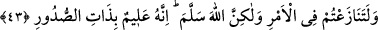

develerin üstünde yolculuk yapıyorlardı.
Âyetin bu kısmının lafzî işâretinden, düşmanın kuvvetinin fazla olduğu ve
müslümanların zayıf bulunduğu anlaşılmaktadır. Bu sebepledir ki, iki fırkanın bulunduğu
mekanlar zikredilmiştir. Çünkü vâdinin Medîne’ye yakın kenarı arazi olarak daha
gevşek olduğundan ayaklar gömülüyordu. Zorlukla yürünüyordu. Hem bu yakada su da
yoktu. Halbuki düşmanın bulunduğu yaka böyle değildi.
Âyetin nazmının iki tarafın kuvvet ve zaafiyetine delâlet eder şekilde gelmesi,
Müslümanların zaferinin ancak Allah’ın lütfuyla ve harikulade olarak gerçekleştiğini
Müslümanların yakînen bilmesi, îman ve şükürlerinin artıp kuvvetlenmesi içindir.
“Eğer” savaşmak için siz ve onlar karşılıklı olarak “sözleşmiş olsaydınız,” sonra da
kendi durumunuzu ve onların durumunu bilseydiniz onlardan korktuğunuzdan ve zafere
ümidiniz olmadığından “sözleştiğiniz vakit hususunda ihtilafa düşerdiniz.”
“Fakat” ihtilafa düşmediğiniz gibi savaştan geri kalmadınız. Bilakis Allah herhangi
bir sözleşme olmaksızın sizinle onları biraraya getirdi. “Allah, yapılması gereken”
yapılmaya lâyık ve müstehak olan “bir işi yerine getirmek” tamamlamak “için” böyle
yaptı. Dostları olan müminlere zafer nasib etti ve düşmanlarını da kahretti.
Hak Teâlâ, hikmetin gereği olarak yapılması gerekeni yaptı. Çünkü böyle bir
karşılaşmanın oluşu zarûrî idi. Ki, “helak olan açık bir delille helak olsun” yani helâk
ile yüzyüze gelen kimsenin helâki, şüpheyle değil Allah Teâlâ katında râzı olunan dînin
İslâm olduğuna dâir apaçık delîli gördükten sonra olsun. Dolayısıyla Hak katında İslâm
dînini kabul etmeyenin hiçbir mazereti kalmasın. “ve yaşayan da açık bir delille
yaşasın.” yani, yaşayan da gördüğü delil üzere yaşasın. Böylece yakîni kuvvetlensin ve
îmanı tamam olsun. Çünkü Bedir savaşı, İslâm’ın gerçek ve hak din olduğuna delâlet
eden açık işaretlerden biridir. Kim onları gördükten sonra hâlâ inkarında devam ederse
başka değil ancak kibrinden, inadından ve hak olduğu açıklanan gerçekten sapmış olur.
Âyette “helak olan ve yaşayan”dan murad, helâk ile ve hayatın eşiğinde, onlarla
yüzyüze olan kimselerdir. Sa‘dî Çelebî “yaşayan” ile Bedir vak‘asından sonra
yaşamaya devam eden kimselerin kastedildiğini söylemiştir. Buna göre “hayatın
eşiğinde” olma mânâsının da doğruluğu ortaya çıkmış olur.
“Çünkü Allah hakkıyle işitici ve” kâfirin küfrünü ve cezâsının ne olduğunu, îman
edenin îmanını ve sevâbını “bilicidir.” Burada Hakk’ın es-Semî‘ (işitici) ve el-Alîm
(bilici) vasıflarının beraberce zikredilmesi, herhalde iman ve küfrün her ikisinin söz ve
îtikada şâmil olması sebebiyledir.
43. Hani Allah uykunda sana onları az gösterdi. Eğer onları sana çok gösterseydi,